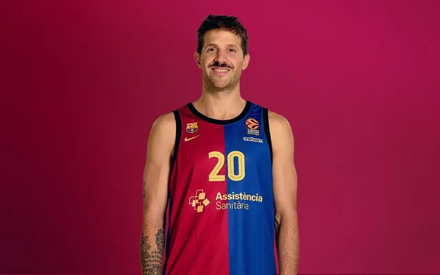
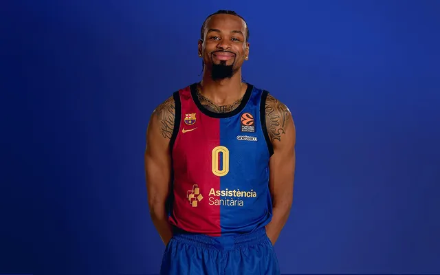
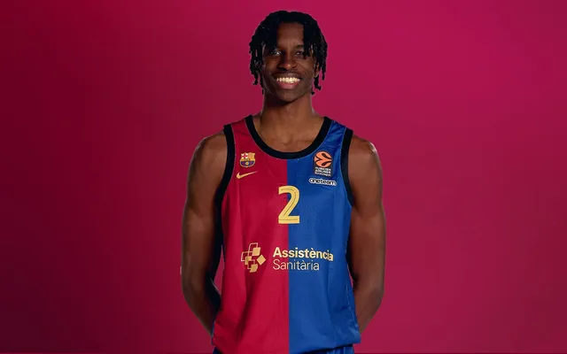
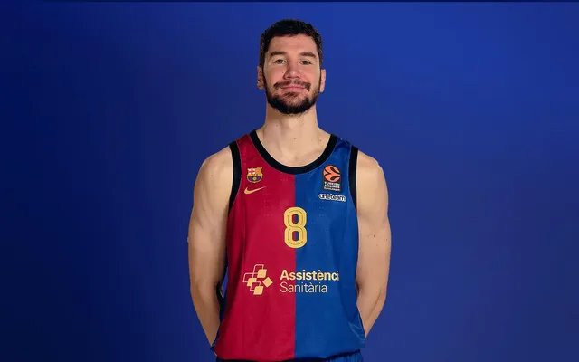
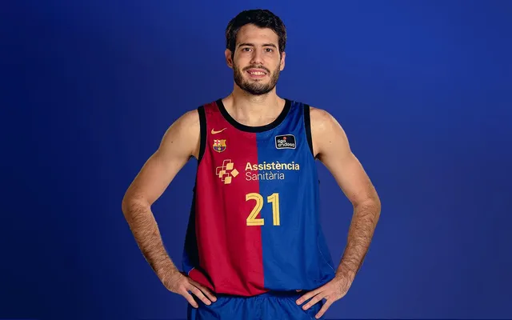
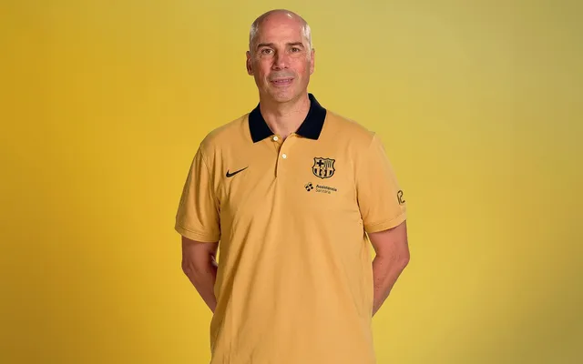

Tomas Satoransky, nacido el 30 de octubre de 1991 en Praga, se forma como jugador en las categorías inferiores del USK Praga hasta que con 17 años se incorpora en 2009 al CB Sevilla. Juega en el vinculado CB Qalat, pero ese mismo curso ya debuta en la ACB. En 2014, Satoransky se incorpora al Barça para jugar dos temporadas previo paso por la NBA.

Nacido en Madrid el 4 de junio de 2004, es un fijo en las convocatorias de la selección española. Se formó en las categorías inferiores del Real Madrid, antes de dar el salto a Alemania, de la mano del Ratiopharm Ulm, paso previo a dar un paso más en su carrera y firmar por el Barça.

El jugador argentino, nacido en Morón el 30 de enero de 1990, cuenta con pasaporte italiano y es internacional con la selección argentina. Base con mucha experiencia en la Liga Endesa, ya que fue jugador del Joventut de Badalona y del Real Madrid, club del que proviene. Además, ha disputado la Euroliga con el conjunto blanco.
Kevin Punter, nacido en el barrio del Bronx de la ciudad de Nueva York el 25 de junio de 1993, se forma en la Universidad de Tennessee antes de dar el salto a Europa donde ha jugado en Grecia, Bélgica, Polonia, Italia y Serbia antes de llegar a Barcelona.
Dame Sarr nació en Oderzo (Treviso, Italia) el 4 de junio de 2006. Llamó la atención durante su paso por la academia Orangel Basket Bassano. Dame Sarr empezó a jugar a baloncesto en el 2012, con seis años. En el equipo de su ciudad natal estuvo hasta el año 2019, cuando con 13 años se marchó a Bassano para empezar una nueva aventura.
Darío Brizuela Arrieta, (nacido el 8 de noviembre de 1994 en San Sebastián) se formó como jugador en la cantera del CB EASO, club de su ciudad natal. Con el club donostiarra destacó en todas las categorías, especialmente en junior, donde se clasificó para los campeonatos de España y fue uno de los jugadores más relevantes.
Justin Anderson, nacido en Estados Unidos, en la localidad de Virginia, el 19 de noviembre de 1993, llega al club azulgrana con la máxima ilusión para afrontar el mayor reto de su carrera desde que aterrizó en Europa, después de su paso por Valencia Basket y Río Breogán.

Alex Abrines (1 de agosto de 1993, Palma, España) comienza su actividad en el colegio La Salle de su Palma natal, donde juega hasta el año 2010, cuando es fichado por las categorías inferiores del Unicaja de Málaga.
Joel Parra López (Barcelona, 4 de abril de 2000) comenzó su carrera en el Club Joventut Badalona, donde pasó por todas las categorías inferiores. El alero destacó desde el inicio y, siendo junior, se consolidó como uno de los jóvenes más prometedores del baloncesto español. Ganó el Torneo de L’Hospitalet y fue elegido en el quinteto ideal, además de conseguir un subcampeonato en el Campeonato de España.

Chimezie Metu (22 de marzo de 1997, Los Ángeles, California, Estados Unidos) dio sus primeros pasos antes de convertirse en profesional con los Trojans de la Universidad del sur de California

Jabari Parker, nacido en Chicago el 15 de marzo de 1995, se forma como jugador en el instituto Simeon Career Academy. Tras destacar en su etapa de instituto, varias universidades estadounidenses contactan con él para hacerse con sus servicios. El paso universitario le propulsa hacia la NBA, siendo el segundo del draft. En la liga estadounidense defiende las camisetas de equipos como Chicago Bulls, Wizards, Haws, Kings y Boston Celtics. El siguiente paso es Europa, el Barça.

Jan Vesely (24 de abril de 1990, Ostrava, República Checa) empieza a jugar en el Príbor y BK Snakes Ostrava en su República Checa natal hasta 2007, cuando se traslada a Eslovenia para jugar en el Geoplin Slovan. En 2008 ficha por el Partizan con quien llega a la Final Four de la Euroliga en el curso 2009/10.

Guillermo Gustavo "Willy" Hernangómez Geuer (Madrid, 27 de mayo de 1994), hijo de jugadores de baloncesto, comenzó jugando en Club Baloncesto Las Rozas, donde destacó desde temprana edad gracias a su estatura y rápida mejora en los movimientos, que le bastó para llamar la atención del Real Madrid, donde se incorporó en las categorías inferiores.

Youssoupha Fall (12 de enero de 1995, Dakar, Senegal) se formó en la Seed Academy de Senegal y en 2012 dio el salto a Europa de la mano del Le Mans francés. Debutó en un partido de la temporada 2014/15, pero no fue hasta el curso siguiente que dispuso de ficha del primer equipo.

Joan Peñarroya, nacido en Terrassa el 20 de abril de 1969, disputó buena parte de su trayectoria como jugador en Manresa, donde ganó la Copa del Rey de 1996. Como entrenador, ha pasado por siete equipos antes de empezar su aventura azulgrana. Además de experiencia en competiciones internacionales como la Basketball Champions League, la Euroocup y la Euroliga, también acumula más de 300 partidos en la ACB en diez cursos.
